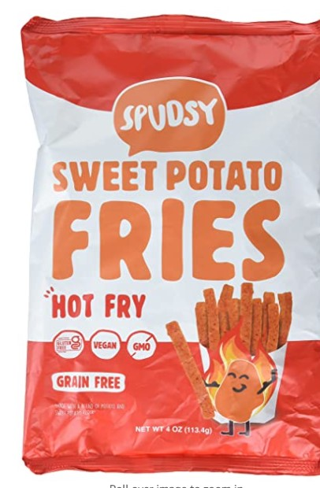
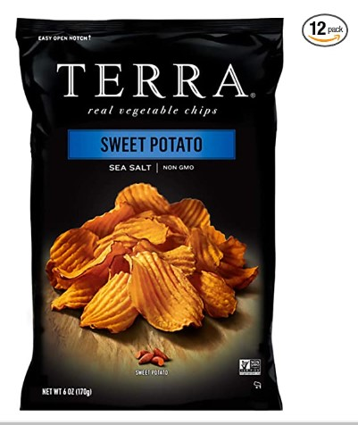
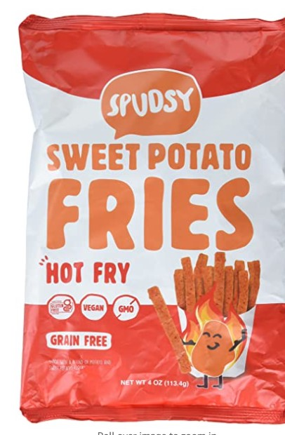
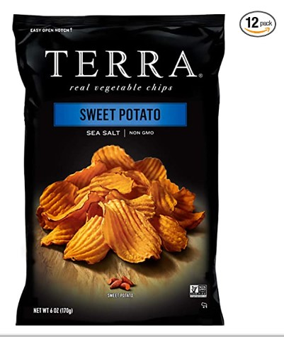

Ljudje sladki krompir običajno povezujejo z navadnim krompirjem, a verjeli ali ne, sta si različna in sploh ne sodita v isto botanično skupino. Medtem ko beli krompir uporabljamo za pripravo slanih jedi, se sladki krompir enako dobro obnese tako pri slanih kot sladkih jedeh. Sladki krompir vsebuje vlaknine, veliko vitaminov in mineralov. Od vitaminov so tukaj prisotni provitamin A, vitamini E, D, C ter B kompleks. Od mineralov pa v sladkem krompirju zasledimo predvsem magnezij, kalcij, kalij in železo. Sladki krompir vsebuje tudi kvercetin, ki ima močno protivnetno delovanje. Je tudi precej bogat z antioksidanti. Zaradi visoke vsebnosti betakarotena in posledično vitamina A sladki krompir zavira procese staranja. Tega si pa vsi želimo, kajne? Ali ste vedeli, da je sladki krompir osnovno živilo prebivalcev na otoku Okinava (Japonska) in prav sladki krompir naj bi bil odgovoren za njihovo dolgoživost. Ogljikovi hidrati v krompirju in sladkem krompirju so večinoma rezistentni škrob in vlaknine, ki našem zdravju koristijo. Vlaknine in rezistentni škrob fermentirajo v črevesju in tvorijo kratkoverižne maščobne kisline. Le te so gorivo za naše zdrave črevesne bakterije, zavirajo rast patogenih bakterij, preprečujejo absorbcijo toksinov, povečajo pa absorbcijo mineralov.
38,57€ na kos
 


